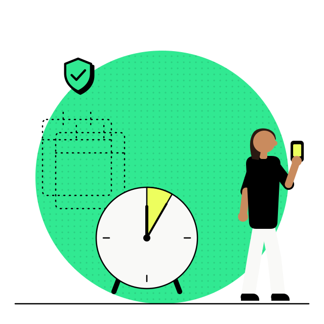
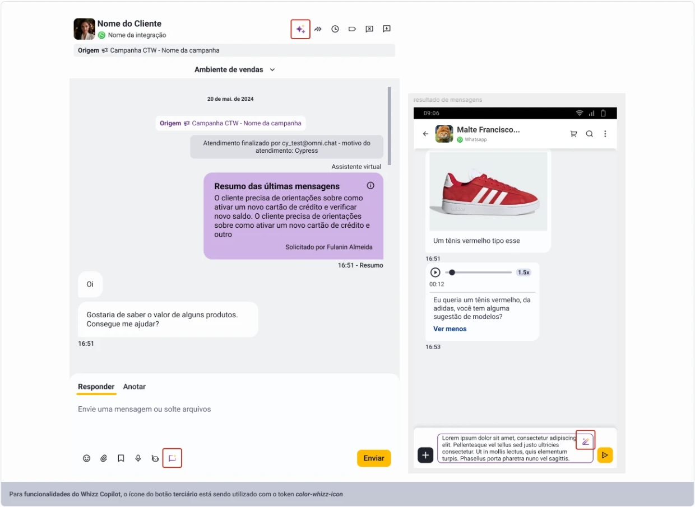
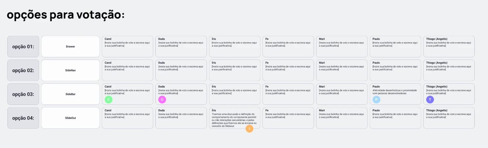
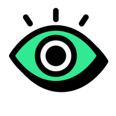

- Omnichat
- Design system
- Documentação para IA
Um design system que pessoas e IA usam do mesmo jeito
O sistema era grande e bem estruturado. O problema eram três versões dele em produção e uma documentação que só servia a quem abria o Figma.
Ficha do projeto
- Duração
- 1 mês, do plano de migração à primeira versão no código
- Jeff
- Planejei a migração e negociei com produto, engenharia e as lideranças de desenvolvimento
- Time
- Os designers, junto comigo na reestruturação do sistema e nas skills do Claude
O tempo para documentar um componente depois de aprovado, com a skill de documentação escrevendo o arquivo que a IA lê e perguntando o que falta antes de fechar.

01 · Contexto
A Omnichat tinha um design system grande e bem estruturado, mas o produto rodava três versões dele ao mesmo tempo. Só a mais nova tinha documentação, e quase tudo sobre uso, anatomia e estilo morava no Figma.
Uma atualização no sistema não chegava nas telas antigas, e coisas começavam a ir para produção sem passar por design.
02 · O problema
A documentação não servia para a IA
Quando passamos a pedir telas para o Claude, o problema ficou maior. Boa parte do que existia no Figma não existia na biblioteca do GitHub, e a IA não sabia qual componente usar em cada fluxo.

O sistema tinha sido feito para designers consultarem. Para servir também à IA, ele precisava mudar de lugar, de dono e de formato.
| Dimensão | Antes | Depois |
|---|---|---|
| Onde mora | No Figma, com a biblioteca do GitHub atrás | No código, no repositório do design system |
| Quem cuida | A engenharia de front‑end | Design |
| Como nasce | Desenhado no Figma e depois codado | Descrito e criado direto no código |
| Documentação | Só na versão mais nova, escrita para designers | Um MD por componente, escrito para a IA |
| Telas antigas | Não recebiam as atualizações do sistema | Migram aos poucos para o sistema novo |
03 · Como funciona
Os componentes passaram a nascer no código
Propus que design assumisse o repositório do design system, que até então era da engenharia de front‑end. Os componentes passaram a nascer direto no código, criados com o Claude a partir de descrição e seguindo atomic design.
Não migramos as três versões de uma vez. Toda tela nova passou a nascer no sistema novo, e as antigas migram conforme são refeitas. O legado parou de crescer sem que o produto precisasse parar.
Um conjunto de título e subtítulo vira componente e entra dentro de qualquer outro, se ajustando ao que o componente pai precisa. No Modal, ele aparece duas vezes. E cada componente ganhou um arquivo MD escrito para a IA, com quando usar, comportamento e responsividade por dispositivo.

# Modal Sobreposição que interrompe o fluxo principal para mostrar uma informação ou pedir uma ação importante, como uma confirmação ou um formulário curto. ## Quando usar - A pessoa precisa decidir ou preencher algo antes de seguir. - O conteúdo extra é curto e não pede rolar a página de trás. ## Não use quando - A ação é destrutiva e só pede sim ou não. Use Confirmation Dialog. - É um aviso que não interrompe nada. Use Toast. ## Anatomia 1. Título primário, na faixa de cima, com o botão de fechar. 2. Título secundário e texto, o componente Título e subtítulo. 3. Ações, um botão secundário e um primário, nessa ordem. 4. Backdrop com 70% de transparência, sempre. ## Comportamento - A altura acompanha o conteúdo. A largura vai até 680px. - O botão de fechar é sempre o Tertiary em color‑fixed‑white. - Esc e o clique no backdrop fecham, e o foco volta para quem abriu. - As cores vêm do componente e não mudam. ## Responsividade - Mobile. Largura da tela com 16px de margem, ações empilhadas. - Tablet. Centralizado, na largura do conteúdo. - Desktop. Centralizado, até 680px.
O MD sai de uma skill de documentação, depois que o componente é aprovado, e o caminho é sempre o mesmo.
 Entrada
EntradaDescrição do componente
O designer descreve o que o componente faz, em vez de desenhar no Figma.
 Camada
CamadaClaude e a skill de documentação
O Claude cria o componente no código, e a skill escreve o MD e pergunta o que está faltando antes de fechar.
 Saída
SaídaO MD do componente
- Quando usar
- Comportamento
- Responsividade no mobile, no tablet e no desktop
04 · Governança
Qualquer área propõe e design aprova
Desenvolvedores, QAs e PMs podem propor componentes. Nenhuma proposta chega à base sem passar por design, e o caminho até lá é o mesmo para todas.

Proposta
Um componente novo, proposto por quem está construindo a tela.
Quem conduz Dev, QA ou PM

Branch de aprovação
A proposta cai numa branch só de componentes novos, fora da raiz do repositório.
Quem conduz O repositório

Aviso automático
Design é avisado automaticamente de cada proposta que chega.
Quem conduz Automação

Aprovar ou negociar
Das 10 propostas que chegaram, 4 viraram evolução de um componente que já existia, em vez de outro com a mesma função.
Quem conduz Design

Raiz do repositório
As outras 6 entraram como componentes novos, e só aí ganham o MD para a IA.
Quem conduz Design
Quando a dúvida era o nome, a decisão ia para votação. Na Sidebar, quatro nomes foram para a mesa, e cada pessoa do time marcava a opção com a sua bolinha e uma justificativa. SideBar ficou com quatro dos cinco votos.

05 · Adoção
O sistema saiu do time de design
Deixamos o design system disponível dentro do Claude para qualquer pessoa da empresa. Pessoas de CS, PMM e vendas passaram a prototipar para conversar com clientes, e engenharia, PMs, QAs e designers passaram a consumir a mesma base.
Passaram a usar o nosso sistema em vez de improvisar o seu.
Quase todas as áreas já usavam o Claude por conta própria antes da formalização.
06 · O que deu errado
O apego ao jeito antigo pesou mais que a ferramenta
A resistência maior veio das pessoas. Designers passaram a descrever em vez de desenhar, e alguns desenhavam no Figma antes de pedir e se frustravam quando o resultado vinha diferente.
O front‑end perguntou o que faria sem a biblioteca. Respondi que eu também não sabia, mas que parte do trabalho dos dois times ia se fundir.
Comecei achando que a migração passaria pelo Figma
Pedíamos para o Claude desenhar no Figma e depois para ele ler o Figma e escrever o código. Um dia paramos e admitimos que era trabalho em dobro, por apego ao jeito antigo.
Se fizesse de novo, amadureceria a primeira versão só entre os designers antes de levar para outras áreas. Vendi o projeto antes de ele existir, sem números, e isso deixou a adoção mais lenta do que precisava.
07 · Resultado
Uma base que pessoas e IA leem do mesmo jeito
Com o MD de cada componente, a IA passou a saber qual usar em cada fluxo. As telas que o Claude gerava e voltavam da revisão de design caíram, em média, de 10 para 2.
O design system deixou de ser uma biblioteca que só designers consultavam e virou a base que qualquer área da empresa usa para prototipar. Toda tela nova nasce nele, e o legado só diminui.
- Antes dos MDs
- 10
- Com os MDs
- 2

componentes com documentação escrita para a IA, do mobile ao desktop
pessoas de CS, PMM e vendas prototipando com o sistema para conversar com clientes
Quem executa não faz igual a você, e funciona.
É a mesma lição de quando virei gestor. Ela voltou quando os designers passaram a descrever em vez de desenhar, e o resultado vinha diferente do que eles imaginavam e servia do mesmo jeito.
Precisa que o design system do seu time sirva para pessoas e para a IA? Me chama no WhatsApp ou veja o próximo caso.
Próximo caso, Omnichat